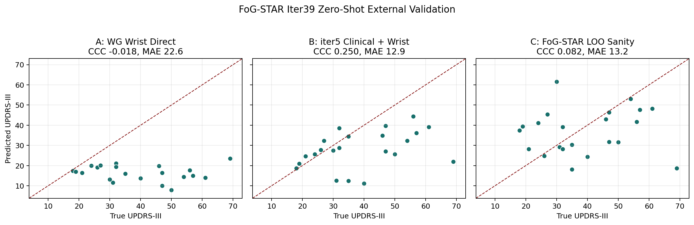
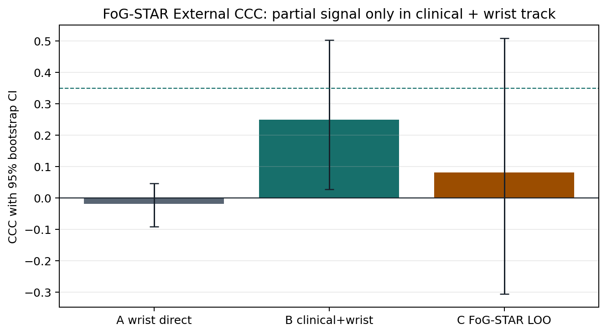

Generated 2026-05-08T11:42:59+00:00
Pre-registered WearGait-PD-to-FoG-STAR evaluation. Tracks A/B train only on WearGait-PD and score all FoG-STAR subjects with total updrs_iii. Track C is an explicitly within-FoG-STAR LOOCV sanity ceiling.
| Track | CCC | 95% CI | MAE | r | Calibration slope |
|---|---|---|---|---|---|
| A: WG Wrist Direct | -0.0180 | [-0.0912, 0.0465] | 22.61 | -0.1256 | -0.0321 |
| B: iter5 Clinical + Wrist | 0.2499 | [0.0281, 0.5028] | 12.89 | 0.3923 | 0.2475 |
| C: FoG-STAR LOO Sanity | 0.0821 | [-0.3058, 0.5096] | 13.20 | 0.0862 | 0.0663 |

